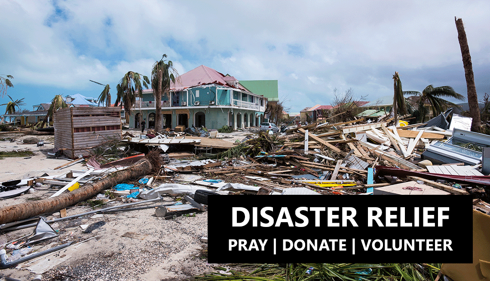

We have served those affected by the natural disasters in:
We have served those affected by the natural disasters in:
PRAY for the ones affected by the disaster, Pray for the HOPE Team, etc.
DONATE to help with supplies, help send the team, create a H.O.P.E. Basket, etc.
VOLUNTEER with us on one of our Disaster Relief/Rebuild HOPE Teams
Click here for out H.O.P.E basket list|  |
Disaster ReliefMissions In Motion International Ministries focus during a disaster is be the "Hands and Feet of Jesus" and offer HOPE. We partner with organizations to help provide much needed hands and feet to help in the clean up efforts. We also provide H.O.P.E. Baskets to those affect by the disaster. Click here to email for more info. |
Disaster Rebuild EffortsMissions In Motion not only wants to help people in the clean up efforts immediately after a natural disaster hits, but also help them to rebuild. Our Disaster Rebuild Trips, allows individuals, families, and group to be the hands and feet of Jesus and help rebuild, repair, and restore homes devastated by natural disasters. Click here to email for more info. |